The representation (7.59) of 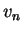
suggests a means of finding a simple approximate answer to
one of the principal questions of this chapter: how large  must be
for the flow in the spanwise plane of symmetry to be essentially described
by the Jones-Furry solution (7.24).
must be
for the flow in the spanwise plane of symmetry to be essentially described
by the Jones-Furry solution (7.24).
Near the front end-wall 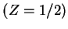 it is clear that
the second series can be neglected in comparison to the Jones-Furry
solution and the first series if  is sufficiently large.
In the first series,
the effect of the
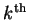 term has reduced in magnitude by a
factor of e after a distance from the front end-wall of
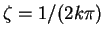. Thus the first term, which also has the largest
magnitude due to the pre-exponential factor with 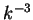 dependence, acts
over the longest distance. It has reduced to less than 0.5%
of its influence at 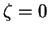 for
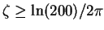. Since the
location of the plane of spanwise symmetry is
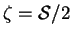, the flow there
may be expected to be sensibly independent of the presence of the
end-walls for
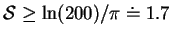. This is a refinement of
the prediction
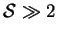 based on Saint-Venant's principle given at the
start of this section. Applying a similar procedure to 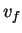 leads to
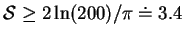.
is sufficiently large.
In the first series,
the effect of the
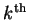 term has reduced in magnitude by a
factor of e after a distance from the front end-wall of
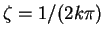. Thus the first term, which also has the largest
magnitude due to the pre-exponential factor with 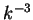 dependence, acts
over the longest distance. It has reduced to less than 0.5%
of its influence at 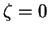 for
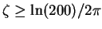. Since the
location of the plane of spanwise symmetry is
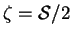, the flow there
may be expected to be sensibly independent of the presence of the
end-walls for
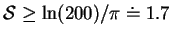. This is a refinement of
the prediction
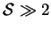 based on Saint-Venant's principle given at the
start of this section. Applying a similar procedure to 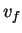 leads to
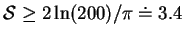.
To investigate this approximation, plots of the difference between the
actual solution for , calculated from (7.59) for each
half of the section, and the Jones-Furry solution (7.24) are
given in figure 7.4 for values of  spanning the estimate
spanning the estimate
| 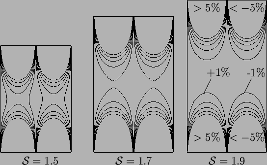 |